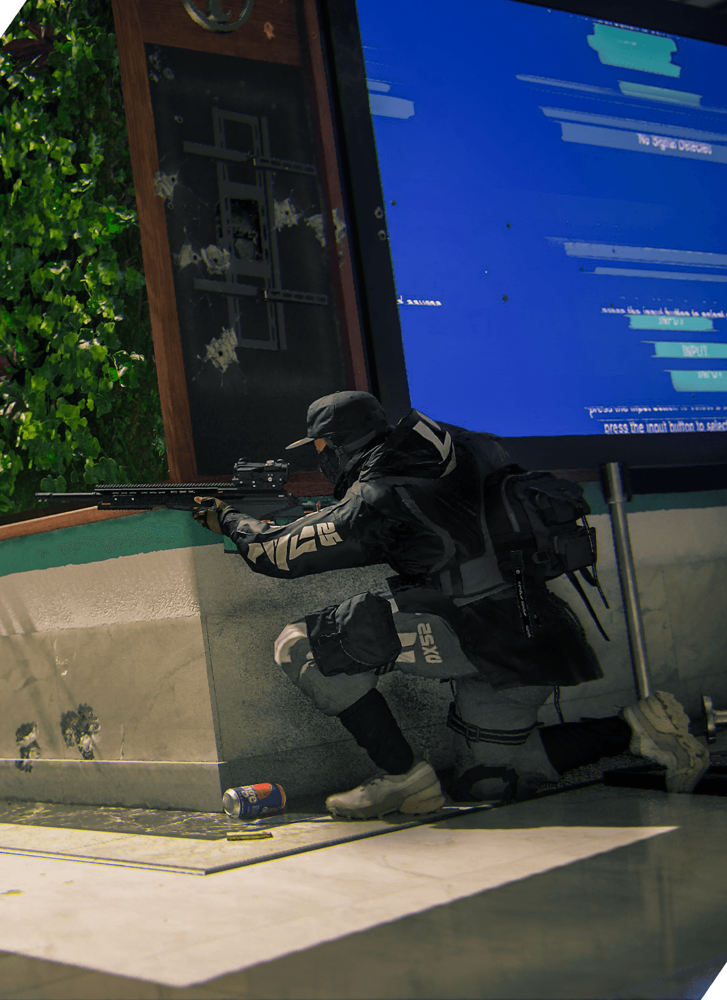
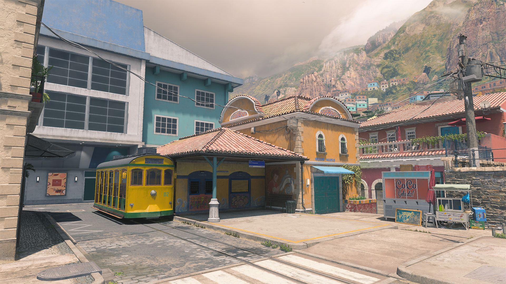
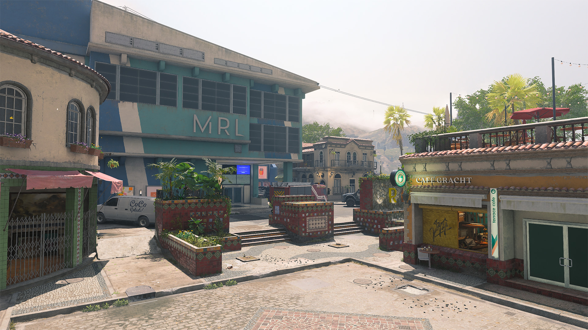
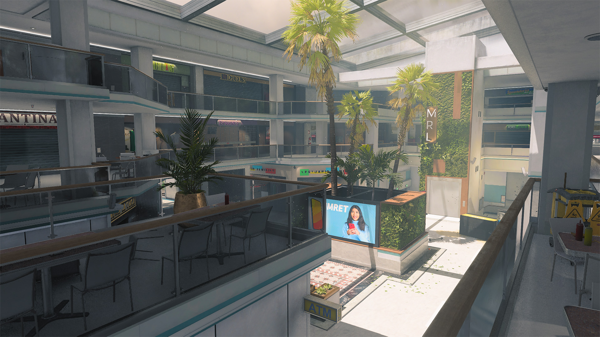
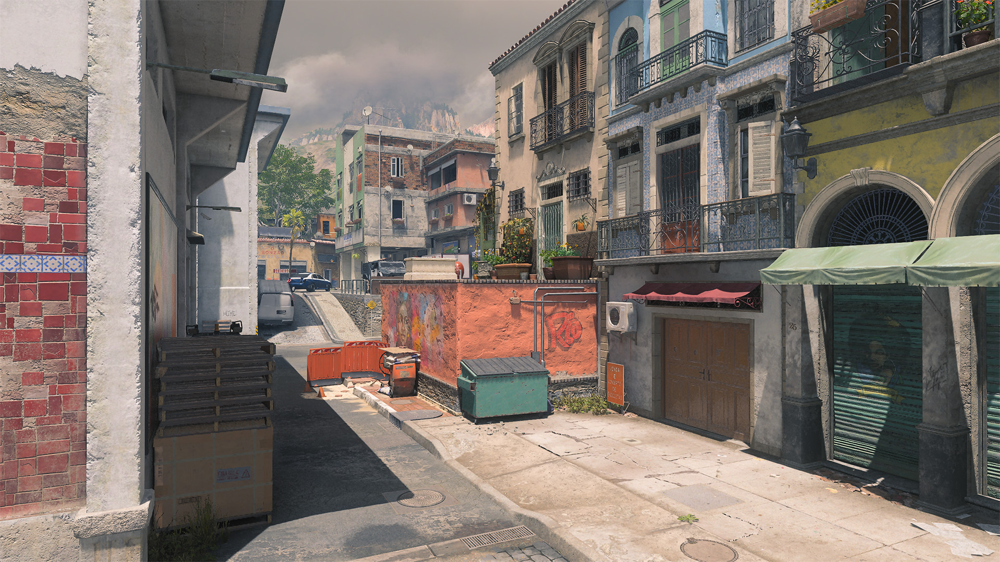
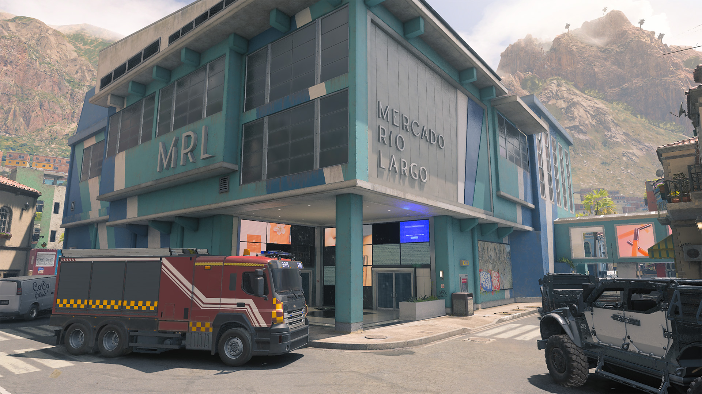
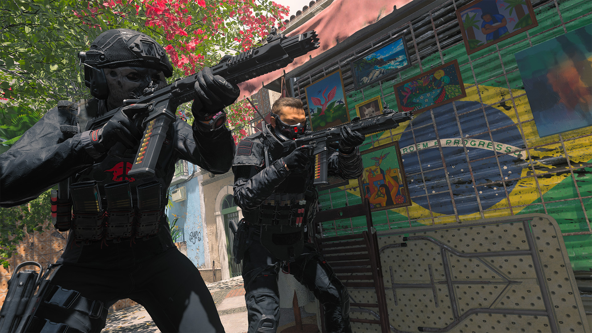

PREBRIEF
Experience the vibrant colors of an upscale market and shopping center in Rio de Janeiro in this midsized 6v6 Multiplayer map.
Rio is divided between two main environments: the central indoor Mall and the streets surrounding it. Both areas offer their own risks and advantages. The best Operators will learn to function well within both, whether by using a single versatile Loadout or by swapping between classes to best fit the current needs of the match.
INTEL CARD — RIO

MWIII - RIO // MULTIPLAYER: MAPS // CORE
Fire sale: The tight confines of the Mall create the perfect opportunity to slay with the JAK Purifier Aftermarket Part. Activate the flamethrower when inside and roast the competition.
Frag the hill: Fighting uphill to take the Mall’s center can be a difficult task against a well-entrenched enemy. Lead your attack with grenades, easily lobbed into the middle from down below. Even if you don’t outright eliminate them, you’ll balance the odds by damaging and/or disorienting them before charging in to finish the job.
Ready for anything: Consider equipping the Gunner Vest to deploy with two Primary Weapons as well as improved reload speed. Deploy with a weapon geared toward perimeter battles and another for Mall skirmishes so that you’re prepared to fight no matter where the match takes you.
TACTICAL OVERVIEW
In team-based modes, squads will either spawn by the Tram Station (north) or by the Café (south).
A large indoor Mall and its side streets lie between the two spawns, offering a variety of engagement types, from frenetic close-quarters battles inside to precision fights along the perimeter.
We’ve divided Rio into five sections based on key areas around the map:
- MAIN SPAWN POINT: Tram Station (+ Residences)
- MAIN SPAWN POINT: Café (+ Plaza, Alleys)
- ADDITIONAL AREA: Mall
- ADDITIONAL AREA: Garage (+ Market)
- ADDITIONAL AREA: Main Street
MAIN SPAWN POINT: Tram Station (NORTH)

The Tram Station lies on flat, open ground where head-to-head battles will challenge players to stay on the move while firing to make up for the lack of cover. Use the buildings to either side to cut off sightlines from the northern Mall entrances, unless you’re specifically watching them for enemy movement. The gift shop is another key point of interest here — both its tight interior and the alleyway running along its far side.
The Residences area just east of the Tram Station offers a more compact arena. Use a Shotgun to blast enemies circling around the kiosk and take the far path to avoid incoming fire from the covered walkway on Main Street. Create your own vantage point by jumping into the back of the parked armored vehicle, evening the odds against opposing enemies down the road.
MAIN SPAWN POINT: Café (SOUTH)

The Café spawn point offers a bit more concealment compared to the Tram Station, especially when taking up a position within the Café; fire on enemies from the open window or escape out the back to pivot toward Main Street. The water feature and parked armored vehicle that this route leads to make for solid cover positions.
The Plaza just north of the Café gets you closer to the action. The vehicles here won’t explode under fire, so use them for cover as you engage the enemies. Be on your guard against opponents pouring out of the Mall as well; there are multiple points of entry to the building in the area.
The Alleys west of the Café lead to the Market and Garage running along the left side of the Mall. Take the path from the Plaza for a more direct approach, or take the back road branching out from the Café for a less conspicuous route.
ADDITIONAL AREA: Mall

The primary point of interest on Rio is the Mall, a hot spot for frenetic firefights. Multiple entrances on all four sides make it easy for Operators to move in and out of the building. It gets crowded fast, too; though the building seems large from the outside, the traversable space within is limited, featuring three clearly defined areas. Combat tends to concentrate on the raised center area adjacent to the lower level’s north and south entryways.
Holding the middle section — often the site of objectives — is no easy task. While holding the high ground is typically an advantage in battle, the various pathways leading to it make for a difficult defense. Bring company in team-based modes to help defend the location.
ADDITIONAL AREA: Garage

For those wishing to avoid the dangers of the Mall, the Garage and Market on the map’s west side offer a strong alternative. Of the two areas, the Garage offers the greater tactical positions. Climb up to the raised platform and crouch behind the planter box for a strong power position down the length of the street. Head into the Garage for a lower profile; hop onto the dumpster outside the sliding doors to attack enemies along the raised Market walkway.
The Market is more cluttered, offering greater cover at the cost of weaker power positions. Operators with long-ranged weapons can climb on top of the food stand for a view across the street, while short- and midranged Loadouts will perform better from a more forward position.
Wherever you are along the western street, keep the Mall entrances in mind to avoid getting flanked by enemies exiting the building.
ADDITIONAL AREA: Main Street

Except for a small dip under the covered walkway, Main Street offers a flat surface throughout. The parked armored vehicles to either side, along with some other climbable objects, offer ways to get above the enemy. The key power position is the raised walkway leading in and out of the Mall. This should be the first spot you check for danger in the area; when using it yourself, be aware of your central position and watch both sides of the street to avoid getting flanked from behind.
TOP 10 TIPS

- Ranged battles outside, CQB inside. Generally, longer-ranged Loadouts perform best on the perimeter while close-ranged Loadouts perform best inside the Mall. Keep this in mind when considering your Loadout and the Loadout of the enemy you’re likely to encounter across the map.
- Quick on your feet. Consider equipping the Stalker Boots when fighting along the map’s perimeter. A good portion of your engagements will take place on flat ground, so the extra strafing and ADS speed will come in handy when attempting to evade enemy shots.
- Two mall rats are better than one. Holding down the Mall for any length of time is a tall order, even more so when defending an objective or attempting to lock down the area. Bring a teammate when possible to help split up the defense work by covering multiple angles of entry at once.
- Caught on film. The Tactical Camera Field Upgrade offers a valuable means of monitoring key pathways near your position, whether that’s watching for enemies on your six in the covered walkway, tracking the street behind you, or gaining another set of eyes in the Mall.
- Through the roof. The rooftop over the center of the Mall is made up of large glass windowpanes, making it possible to land aerial attacks on those within. Use this to attack enemies on objective points there, catching them in the blast or forcing them to move off the point.
- Just browsing. You don’t have to go straight for the center when moving through the Mall. The entryways in the north and south are also useful for crossing the building horizontally to get from street to street, whether to evade a pesky enemy, benefit from overhead protection, or use as another route in your map toolbox.
- Stay mobile with Tac-Stance. Feeling hindered when entering the Mall with a mid- to long-ranged weapon in hand? Toggle on Tac-Stance for greater mobility and faster target acquisition.
- Decoy up. Initiative is a major advantage when fighting within the Mall’s confined layout. Throw enemies off with the Inflatable Decoy Field Upgrade; place it somewhere prominent and then land the elimination on Operators tricked into attacking it on sight.
- No, you don’t. Equip the Signal Jammer Perk to disrupt enemy Claymores and other proximity-based explosives. You’ve got enough to worry about when traversing the Mall, and this will allow you to keep your eyes ahead of you instead of checking for dangers planted on the floor.
- Shop till they drop. Can’t break the enemy’s stronghold on the Mall? Let them have it. Work with your team to set up around the perimeter, covering the various entryways into and out of the area. Let them come to you and blast them the moment they step out of the building.